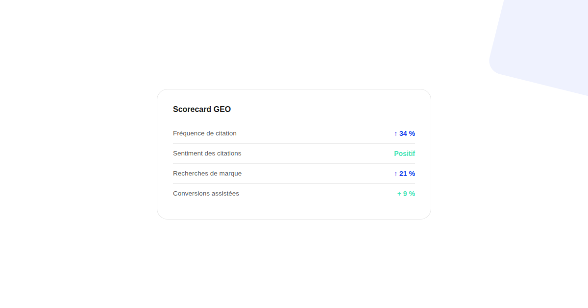
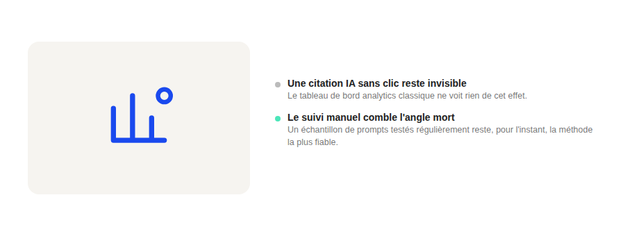

Mesurer le ROI du GEO : les indicateurs qui remplacent (ou complètent) le trafic organique
Être cité dans une réponse de ChatGPT ne génère pas toujours un clic vers votre site — et c'est justement là que le tableau de bord SEO classique devient aveugle. Mesurer le GEO demande d'autres indicateurs, pas un simple report du même tableau.

Le SEO classique a un entonnoir de mesure bien rodé : position, impression, clic, conversion. Le GEO casse cette chaîne dès la deuxième étape : un assistant IA peut citer votre marque, reformuler votre contenu et répondre entièrement à la question de l'utilisateur sans qu'aucun clic ne soit jamais généré. Mesurer le ROI du GEO avec les seuls outils du trafic organique revient à chercher sous le seul lampadaire qui éclaire.
Pourquoi le trafic organique seul ne suffit plus
Une citation dans une réponse de ChatGPT, Claude ou Perplexity peut influencer une décision d'achat sans laisser aucune trace dans Google Analytics. L'effet existe, mais il est invisible dans un tableau de bord qui ne mesure que les sessions issues d'un clic. Ignorer cet effet revient à sous-estimer systématiquement l'impact réel d'un travail de visibilité IA.
Les indicateurs à suivre en complément
Quatre indicateurs comblent une partie de cet angle mort : la fréquence de citation de la marque sur un échantillon de prompts représentatifs testés régulièrement (le « share of voice » dans les réponses IA), le sentiment de ces citations (neutre, positif, ou carrément erroné — une citation négative n'a pas la même valeur qu'une citation positive), l'évolution des recherches de marque directe dans Search Console (un signal de notoriété qui accompagne souvent une hausse de citations), et le taux de conversions assistées sur les sessions arrivant par recherche de marque, qui peut révéler un parcours commencé ailleurs.

Le suivi manuel reste nécessaire, et ce n'est pas un défaut
Il n'existe pas aujourd'hui d'outil analytique qui mesure de façon fiable et automatisée la fréquence de citation d'une marque sur l'ensemble des assistants IA grand public. Le suivi passe par des tests manuels ou semi-automatisés, réguliers, sur un échantillon fixe de prompts représentatifs de l'intention de recherche réelle de l'audience. Ce n'est pas un contournement imparfait d'un meilleur outil qui n'existerait pas encore : c'est, pour l'instant, la méthode la plus fiable disponible.
Construire un scorecard GEO simple
Un scorecard GEO utile tient sur une seule page : un score de présence sur l'échantillon de prompts suivis (présent / absent / cité avec erreur), l'évolution de ce score sur plusieurs mois, les recherches de marque sur la même période, et une colonne de conversions assistées issues de ces recherches. Ce n'est pas un ROI au sens financier strict, mais c'est un ensemble d'indicateurs cohérents qui permet de juger si un travail de GEO produit un effet réel, plutôt que de rester dans l'incertitude totale.
FAQ
Google Search Console permet-il de mesurer le GEO ?
Indirectement seulement : Search Console montre le trafic issu de certaines surfaces IA de Google (comme AI Overviews) mais pas les citations sur ChatGPT, Claude ou Perplexity. Il faut compléter par un suivi manuel ou outillé des réponses de ces assistants.
Une hausse des recherches de marque est-elle une preuve fiable d'effet GEO ?
C'est un signal utile mais pas une preuve isolée : une hausse de notoriété peut avoir d'autres causes (campagne publicitaire, actualité, bouche-à-oreille). Elle devient plus convaincante quand elle coïncide avec une période où la marque est effectivement davantage citée dans les réponses IA suivies.
Faut-il arrêter de suivre le trafic organique classique à cause du GEO ?
Non, le trafic organique reste un indicateur pertinent pour tout ce qui passe encore par un clic vers le site. Le GEO ajoute des indicateurs complémentaires pour la part croissante des interactions qui ne génèrent justement pas ce clic.
Envie de construire un tableau de bord GEO pour votre marque ?
Pour aller plus loin, voir la page GEO, et l'article Comment auditer sa visibilité dans ChatGPT et Perplexity.
Pour continuer sur ce sujet.